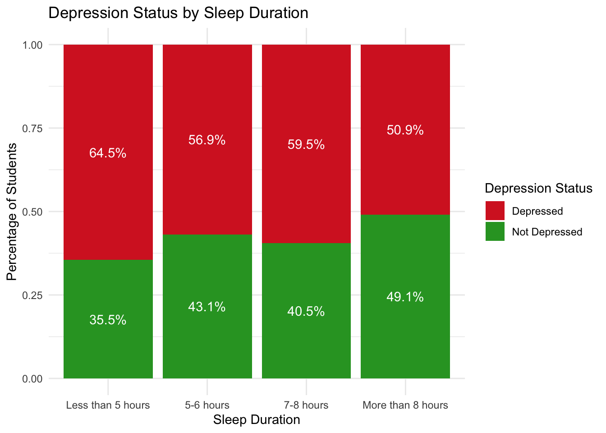

Data analysis
Introduction
In today’s fast-paced academic environment, mental health issues such as depression have become increasingly prevalent among students. This project focuses on analyzing a large dataset of students to uncover patterns and factors associated with depression levels. The dataset contains information on demographics, academic pressure, work pressure, sleep habits, dietary practices, financial stress, satisfaction with study and work, and family history of mental illness.
The primary goal of this analysis is to understand how various personal, academic, and lifestyle factors contribute to depression among students. By exploring relationships between variables such as sleep duration, CGPA, financial stress, and suicidal thoughts, we aim to identify key areas that may require attention for mental health support and intervention programs.
Through a combination of descriptive statistics, visual exploration, and correlation analysis, this study provides insights that can help educators, counselors, and policymakers develop better strategies to support student mental health and well-being.
Demographic Analysis
Understanding the demographic distribution of the students provides valuable context for interpreting the results of the study. The following aspects were analyzed:
- Gender Distribution: The proportion of male and female students was examined.
- Age Distribution: The age range and average age of the students were explored.
- City Distribution: The number of students from each major city was calculated.
- Profession: The dominant professions (e.g., Student, Working Professional) were identified.
These basic insights help characterize the sample and reveal any biases or patterns in the demographic background of the participants.
Lifestyle Factors
This chart shows that people who sleep less than 5 hours have a higher percentage of depression, while as individuals’ sleep duration approaches the recommended amount, the percentage of those suffering from depression decreases.

This chart shows the percentage of students who are depressed or not within each dietary habit group: Healthy, Moderate, and Unhealthy. Each pie chart represents one group, with orange indicating Depressed and blue indicating Not Depressed. It helps highlight how depression rates vary across different eating patterns.
The analysis reveals a clear trend: students who spend more hours working or studying each day are more likely to experience depression. This suggests that excessive academic or work-related demands may contribute to increased psychological stress and reduced mental well-being. The distribution shows a higher proportion of depression cases among those who exceed typical study or work durations. These findings highlight the importance of promoting balanced schedules and encouraging self-care alongside academic or professional responsibilities.
Mental Health Risk Factors
The analysis shows a strong link between suicidal thoughts and depression among students. A significantly higher percentage of students who reported having suicidal thoughts are also classified as depressed. In contrast, those who did not report such thoughts have a much lower prevalence of depression. This highlights the critical importance of identifying and supporting students experiencing suicidal ideation, as it is a strong indicator of underlying mental health challenges.
The chart shows a strong association between financial stress and depression among students. As financial stress levels increase from 0 to 5, the percentage of students experiencing depression rises significantly. Students reporting extreme financial stress (levels 4–5) have the highest depression rates, while those with little or no financial concerns report much lower rates. These findings emphasize the role of financial pressure as a key risk factor for student mental health.
The chart indicates that students with a family history of mental illness are more likely to experience depression. Specifically, 61.3% of students with a family history reported being depressed, compared to 56% of those without such a history. Although the difference is not large, it suggests a potential link between family history and mental health, where genetic or environmental factors may contribute to higher rates of depression. However, further analysis is needed to fully understand the underlying causes.